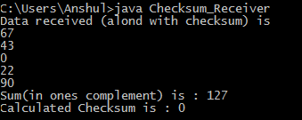
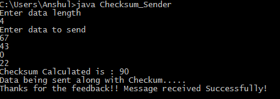

Checksum is an error-detecting technique that can be applied to message of any length. It is used mostly at the network and transport layers of the TCP/IP protocol suite.
Here, we have considered decimal data that is being sent by the sender to the receiver using socket programming. The number of segments that the data is divided into here depends on the length of data being sent. If the length of data being sent is ‘x’, then the number of segments is also ‘x’, implying that each segment has single data. Here, we basically deal with decimal data. The concept will be consistent for string data as well because each character of the string can be represented by its equivalent ASCII code, hence again leaving us with decimal data.
Prerequisite : Socket Programming in Java | CheckSum
Example :
At sender side : Enter data length 4 Enter data to send 67 43 0 22 Checksum Calculated is : 90 Data being sent along with Checksum..... Thanks for the feedback!! Message received Successfully! At receiver side : Data received (alond with checksum) is 67 43 0 22 90 Sum(in ones complement) is : 127 Calculated Checksum is : 0 Here the checksum calculated at the receiver side was 0. Hence, it indicates a successful data transfer.
Approach :
At the Sender Side :
- First, ask for the length of data to send, in order to ascertain the number of segments.
- Then perform a ones complement of each data being entered simultaneously adding them. This means the sum would not be required to be complemented again.
- Then send the data along with the computed checksum to the server.
- Then report the successful transference of the message or otherwise depending on the feedback received from the server.
At the Receiver Side :
- The receiver waits for data to arrive from the sender.
- Once the data along with checksum is received from the sender, the receiver complements what is received and simultaneously keeps on adding them.
- Finally, the receiver complements the above sum, and checks whether the result is a zero or not and reports the same to the sender. A zero would indicate a successful data transfer and anything else would indicate an error in the data that is received.
Finally all connections are closed by both the sides.
Below is the implementation for above approach.
Here, “localhost” is used as the IP to setup the connection with port number 5000 opened for connection. The sender should start running prior and wait for the receiver.
// Java code for Checksum_Sender
package checksum_sender;
import java.io.*;
import java.net.*;
import java.util.*;
public class Checksum_Sender
{
// Setting maximum data length
private int MAX = 100;
// initialize socket and I/O streams
private Socket socket = null;
private ServerSocket servsock = null;
private DataInputStream dis = null;
private DataOutputStream dos = null;
public Checksum_Sender(int port) throws IOException
{
servsock = new ServerSocket(port);
// Used to block until a client connects to the server
socket = servsock.accept();
dis = new DataInputStream(socket.getInputStream());
dos = new DataOutputStream(socket.getOutputStream());
while (true)
{
int i, l, sum = 0, nob;
Scanner sc = new Scanner(System.in);
System.out.println("Enter data length");
l = sc.nextInt();
// Array to hold the data being entered
int data[] = new int[MAX];
// Array to hold the complement of each data
int c_data[] = new int[MAX];
System.out.println("Enter data to send");
for (i = 0; i < l; i++)
{
data[i] = sc.nextInt();
// Complementing the entered data
// Here we find the number of bits required to represent
// the data, like say 8 requires 1000, i.e 4 bits
nob = (int)(Math.floor(Math.log(data[i]) / Math.log(2))) + 1;
// Here we do a XOR of the data with the number 2^n -1,
// where n is the nob calculated in previous step
c_data[i] = ((1 << nob) - 1) ^ data[i];
// Adding the complemented data and storing in sum
sum += c_data[i];
}
// The sum(i.e checksum) is also sent along with the data
data[i] = sum;
l += 1;
System.out.println("Checksum Calculated is : " + sum);
System.out.println("Data being sent along with Checkum.....");
// Sends the data length to receiver
dos.writeInt(l);
// Sends the data one by one to receiver
for (int j = 0; j < l; j++)
dos.writeInt(data[j]);
// Displaying appropriate message depending on feedback received
if (dis.readUTF().equals("success"))
{
System.out.println("Thanks for the feedback!! Message received
Successfully!");
break;
}
else if (dis.readUTF().equals("failure"))
{
System.out.println("Message was not received successfully!");
break;
}
}
// Closing all connections
dis.close();
dos.close();
socket.close();
}
// Driver Method
public static void main(String args[]) throws IOException
{
Checksum_Sender cs = new Checksum_Sender(45678);
}
}
// Java code for Checksum_Receiver
package checksum_sender;
import java.net.*;
import java.io.*;
import java.util.*;
public class Checksum_Receiver {
// Initialize socket and I/O streams
private Socket s = null;
private DataInputStream dis = null;
private DataOutputStream dos = null;
// Constructor to put ip address and port
public Checksum_Receiver(InetAddress ip,int port)throws IOException
{
// Opens a socket for connection
s = new Socket(ip,port);
dis = new DataInputStream(s.getInputStream());
dos = new DataOutputStream(s.getOutputStream());
while (true)
{ Scanner sc = new Scanner(System.in);
int i, l, nob, sum = 0, chk_sum;
// Reads the data length sent by sender
l = dis.readInt();
// Initializes the arrays based on data length received
int c_data[] = new int[l];
int data[] = new int[l];
System.out.println("Data received (alond with checksum) is");
for(i = 0; i< data.length; i++)
{
// Reading the data being sent one by one
data[i] = dis.readInt();
System.out.println(data[i]);
// Complementing the data being received
nob = (int)(Math.floor(Math.log(data[i]) / Math.log(2))) + 1;
c_data[i] = ((1 << nob) - 1) ^ data[i];
// Adding the complemented data
sum += c_data[i];
}
System.out.println("Sum(in ones complement) is : "+sum);
// Complementing the sum
nob = (int)(Math.floor(Math.log(sum) / Math.log(2))) + 1;
sum = ((1 << nob) - 1) ^ sum;
System.out.println("Calculated Checksum is : "+sum);
// Checking whether final result is 0 or something else
// and sending feedback accordingly
if(sum == 0)
{
dos.writeUTF("success");
break;
}
else
{
dos.writeUTF("failure");
break;
}
}
// Closing all connections
dis.close();
dos.close();
s.close();
}
// Driver Method
public static void main(String args[])throws IOException
{
// Getting ip address on which the receiver is running
// Here, it is "localhost"
InetAddress ip = InetAddress.getLocalHost();
Checksum_Receiver cr = new Checksum_Receiver(ip,5000);
}
}
Output :

